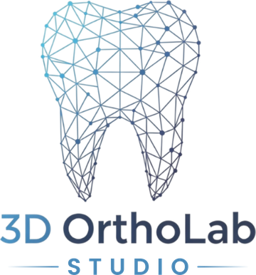
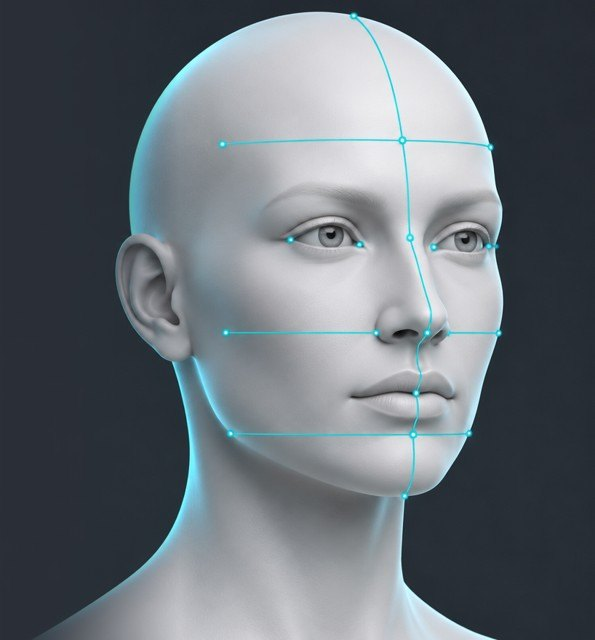
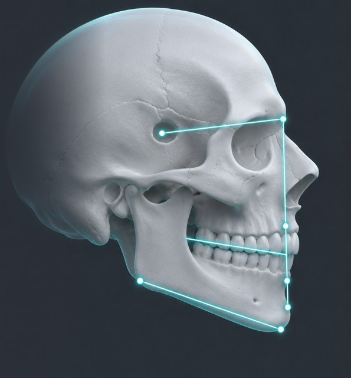
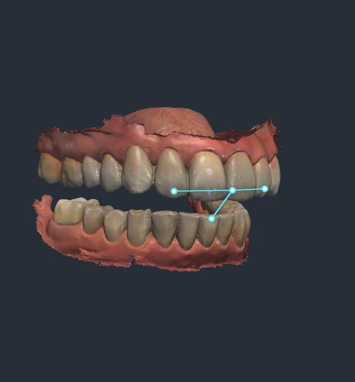
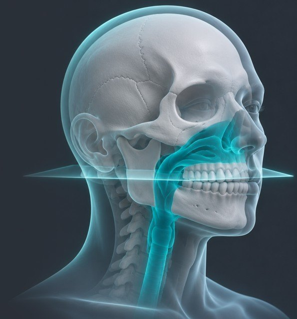
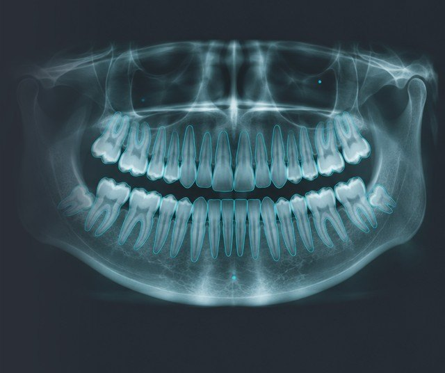
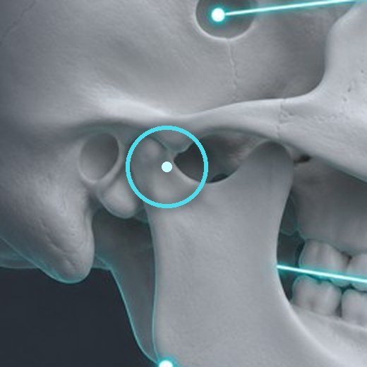

Windows
Windows 10 u 11 de 64 bits
- Procesador Intel Core i5 / Ryzen 5 o mejor
- 8 GB de RAM (mejor 16 GB)
- 3 GB libres en disco
- La IA corre sin tarjeta NVIDIA
Instalador .exe · 677 MB

Análisis facial 3D · Cefalometría 2D · Análisis de modelos
Tres módulos de diagnóstico en un solo programa. Todo se calcula en tu computadora.

IncluidoDe las fotos clínicas del paciente a su cara en 3D, con el diagnóstico facial y de sonrisa.

IncluidoLa IA propone los puntos en la lateral de cráneo; tú los ajustas. Steiner, Roth-Jarabak y Ricketts.

IncluidoTus escaneos de 3D OrthoLab a color: overjet, overbite, contactos, Korkhaus, Bolton y Moyers, con informe PDF.

ProntoCraneometría 3D, vía aérea y dientes con IA desde el DICOM.

ProntoCada diente con su número, estadio de Nolla y hallazgos.

ProntoCondilografía, análisis de los cóndilos e interpretación de la resonancia magnética.
Tres pasos. La primera vez tu computadora te va a pedir confirmar, es normal.
Toca Descargar para Windows. Google Drive avisa que el archivo es muy grande para revisarlo: dale Descargar de todos modos.
Abre el archivo descargado. Si sale la ventana azul «Windows protegió su PC», toca Más información y luego Ejecutar de todas formas.
Sigue el instalador con Siguiente.
Abre 3D OrthoLab Studio desde el ícono del escritorio. Te muestra el código de tu equipo: toca Copiar código y mándamelo por WhatsApp.
Te contesto con tu clave: la pegas en esa misma ventana y listo.
Toca Descargar para Mac. Google Drive avisa que el archivo es muy grande para revisarlo: dale Descargar de todos modos.
Abre el .dmg y arrastra 3D OrthoLab Studio a la carpeta Aplicaciones.
La primera vez, si la Mac dice que no puede abrirlo: ve a Configuración del Sistema → Privacidad y seguridad, baja y toca Abrir de todos modos.
Abre 3D OrthoLab Studio desde Aplicaciones. Te muestra el código de tu equipo: toca Copiar código y mándamelo por WhatsApp.
Te contesto con tu clave: la pegas en esa misma ventana y listo.
| Windows | Mac | |
|---|---|---|
| Sistema | Windows 10 de 64 bits (mejor Windows 11) | macOS 14 Sonoma o más nuevo |
| Procesador | Intel Core i5 / Ryzen 5 de 2018 en adelante | Chip Apple M1 o más nuevo |
| RAM | 8 GB cerrando otros programas · 16 GB recomendado | 8 GB cerrando otros programas · 16 GB recomendado |
| Disco libre | 3 GB + tus casos (mejor 10 GB en SSD) | 5 GB + tus casos (mejor 15 GB) |
| Pantalla | 1366 × 768 o más (mejor Full HD) | MacBook de 13" o más |
¿Cómo lo reviso? En Windows: Configuración → Sistema → Información. En Mac: menú de la manzana → Acerca de esta Mac.
Solo para activar el programa y para recibir las mejoras. Todo el análisis se hace en tu computadora.
No. Las fotos, radiografías y escaneos de tus pacientes nunca salen de tu computadora.
Claro. Descarga AnyDesk (es gratis), pásame tu número de AnyDesk y te lo dejo funcionando en línea.
En Mac, la primera vez AnyDesk te pide permiso de «Grabación de pantalla» y «Accesibilidad».
Por ahora solo funciona en Mac con chip Apple (M1 o más nueva). Para saber cuál tienes: menú de la manzana → Acerca de esta Mac → «Chip».